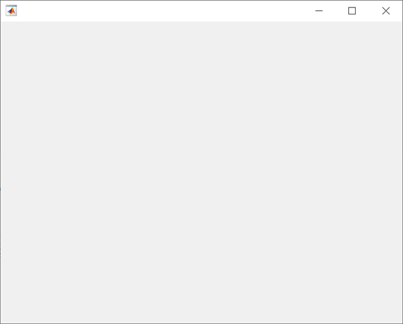
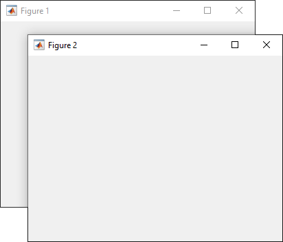
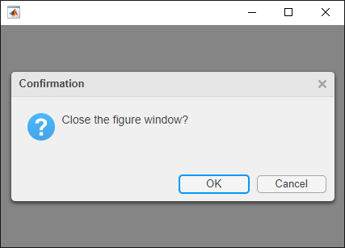

uifigure
Create figure for designing apps
Description
fig = uifigureFigure object. This is
the type of figure that App Designer uses.
fig = uifigure(Name=Value)
Examples
Create a blank figure for app building.
fig = uifigure;

Create a UI figure with a specific title and icon.
fig = uifigure("Name","Plotted Results", ... "Icon","peppers.png");

Query the figure background color.
c = fig.Color
c = 1×3
0.9608 0.9608 0.9608
Create a default UI figure.
fig = uifigure;

Get the location, width, and height of the figure.
fig.Position
ans = 681 559 560 420
This means that the figure window is positioned 681 pixels to the right and 559 pixels above the bottom left corner of the primary display, and is 560 pixels wide and 420 pixels tall.
Halve the figure width and height by adjusting the third and fourth elements of the position vector.
fig.Position(3:4) = [280 210];

Create two UI figure windows. Block interactions in Figure 1 by specifying
"modal" as the WindowStyle
property value for Figure 2. You cannot interact with Figure 1 until Figure
2 is closed.
fig1 = uifigure(Name="Figure 1"); fig1.Position = [500 500 370 270]; fig2 = uifigure(Name="Figure 2"); fig2.Position = [540 450 370 270]; fig2.WindowStyle = "modal";

Code the CloseRequestFcn callback to
open a modal confirmation dialog box when the user tries to close the window.
Copy and paste this code into the MATLAB® Editor, and then run closeFig.
function closeFig fig = uifigure(Position=[100 100 425 275]); fig.CloseRequestFcn = @(src,event)my_closereq(src); function my_closereq(fig) selection = uiconfirm(fig,"Close the figure window?",... "Confirmation"); switch selection case 'OK' delete(fig) case 'Cancel' return end end end
Click the figure close button. The confirmation dialog box opens.

Change the displayed mouse pointer symbol when you hover over a push button.
This program file, called setMousePointer.m, shows you
how to:
Create a UI figure which executes custom code when the mouse is moved over a button. To do this, use the
@operator to assign themouseMovedfunction handle to theWindowButtonMotionFcnproperty of the figure.Create a push button and specify its coordinates and label.
Create a callback function called
mouseMovedwith the custom code you want to execute when the mouse moves over the button. In the function, query theCurrentPointproperty to determine the mouse pointer coordinates. Set thePointerproperty to"hand"if the pointer coordinates are within the push button coordinates.
Run setMousePointer. Then move the mouse over the push
button to see the mouse pointer symbol change from an arrow to a
hand.
function setMousePointer fig = uifigure(Position=[500 500 375 275]); fig.WindowButtonMotionFcn = @mouseMoved; btn = uibutton(fig); btnX = 50; btnY = 50; btnWidth = 100; btnHeight = 22; btn.Position = [btnX btnY btnWidth btnHeight]; btn.Text = "Submit Changes"; function mouseMoved(src,event) mousePos = fig.CurrentPoint; if (mousePos(1) >= btnX) && (mousePos(1) <= btnX + btnWidth) ... && (mousePos(2) >= btnY) && (mousePos(2) <= btnY + btnHeight) fig.Pointer = "hand"; else fig.Pointer = "arrow"; end end end

Name-Value Arguments
Limitations
Currently, you cannot pass a
Figureobject created with theuifigurefunction to theprintfunction. If you attempt to do so, MATLAB throws an error. For more information, see Display Graphics in App Designer.
Tips
Use the graphics root object to set default values on the root level for other types of objects. For example, set the default colormap for all future figures to the
summercolormap.To restore a property to its original MATLAB default, use theset(groot,"DefaultFigureColormap",summer)'remove'keyword.For more information on setting default values, see Default Property Values.set(groot,"DefaultFigureColormap","remove")
To bring a figure window to the front, use the
focusfunction.